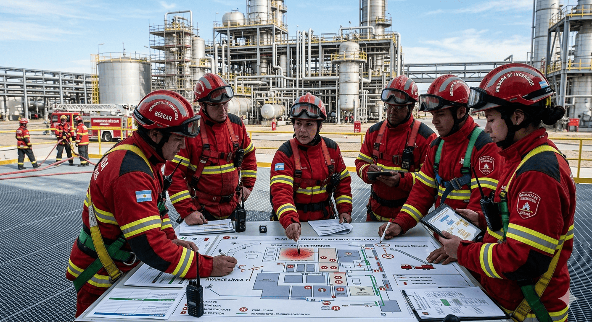
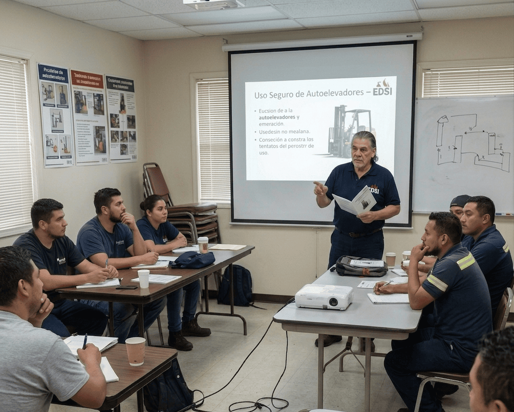

Combate de Incendios - Capacitación para personal general

Introducción al combate y prevención de incendios
Orientado a capacitar al personal no especializado y sin experiencia previa en el accionar ante situaciones de incendio. Curso teórico introductorio en clases de fuego, supervivencia y uso de los diversos tipos de extintores portátiles.

Uso de agentes extintores
Orientado a capacitar al personal no especializado que ya cuenta con conocimientos básicos. Curso práctico en el uso de extintores portátiles. Entrenamiento individual con fuego controlado y extintores reales.
Combate de Incendios - Capacitación para brigadas

Combate de incendios
Orientado a formar brigadistas especializados a partir de personal que ya cuenta con conocimientos básicos y prácticos en uso de extintores y respuesta ante incendios.
Curso teórico en combate de incendios en fase de combustión libre mediante el uso de líneas de ataque.
Este curso se adapta de forma personalizada al inmueble donde operará la brigada, considerando las particularidades de su industria o comercio.

Uso de líneas de ataque
Curso práctico en uso de nichos hidrantes y líneas de ataque. Simulacro de combate de incendio, técnicas de trabajo en equipo, familiarización con el material y mejora continua.
Uso seguro de autoelevadores

Seguridad con autoelevadores (Resolución 960/2015)
Curso teórico-práctico de operación de autoelevadores orientado a personal que requiere certificarse por primera vez en el uso de los mismos según (Resolución 960/2015).

Renovación de certificación (Resolución 960/2015)
Curso teórico de seguridad en autoelevadores orientado a personal que ya fue certificado con anterioridad y que requiere renovar la misma. (Resolución 960/2015).
¿Necesita un plan a medida para su empresa?
Desarrollamos contenidos específicos según la actividad y el riesgo de su planta o institución.
Enviar Correo a info@edsi.com.ar